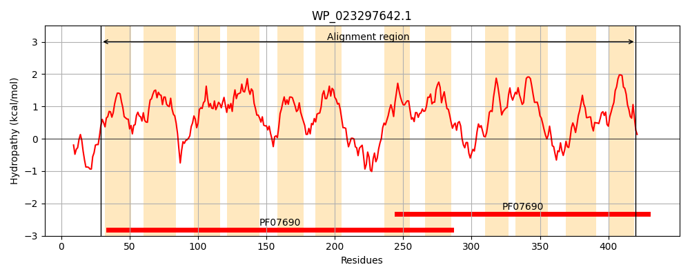
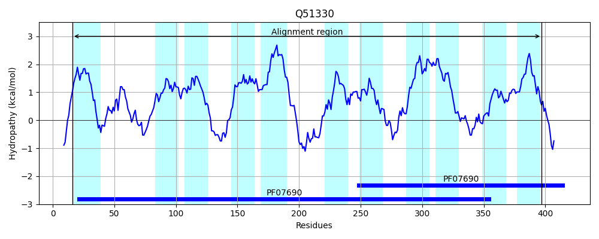
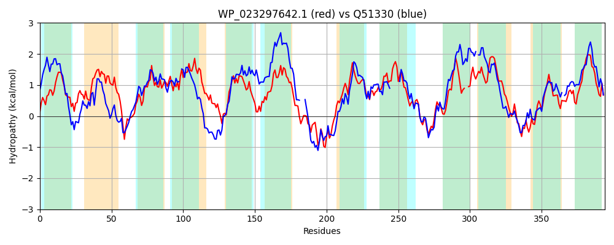

Hit Accession: Q51330
Hit TCID: 2.A.1.11.1
Hit Description: gnl|BL_ORD_ID|13925 gnl|TC-DB|Q51330|2.A.1.11.1 OXALATE:FORMATE ANTIPORT PROTEIN - Oxalobacter formigenes.
Mach Len: 394
e:0.000000
Query TMS Count : 12
Hit TMS Count: 11
TMS-Overlap Score: 9.050000
Predicted Substrates:None
BLAST Alignment:
Score: 561 , Bit scores: 220 bits, E-value: 1.4e-67, Alignment length: 394, Percentage identity: 32
Query: 29 KWRQLVLGLICMAAISSPQYVWTLLTKPLAAKLGVGLPELQVTFSLLIILQTFFSPFQGRLVEKFGPRRLIAIGTVMAGMSWVLSAQVNGLATLWLVYGCMGGLGTGIVYIGVVGLMVKWFPQQRGFAAGSVAAGYGMGAIITTFPISLSLTTNGLEHTMTTFGILFALVGFLASQGLKLPPPAVSQPVSQTVAQSSRSFTSREMLRQPLFWLMFAMMAMMSTSGLMVTSQMAVFAEDFGISQAVVFGMAALPLALTIDRFTNGLTRPLFGFISDRFGREQTMFIAFALEGVAMMLW--LACREDPLLFVLLSGVVFFGWGEIFSLFPSTLTDTFGSEHAATNYGWLYISQGIGSIFGGPLAALLYQYTHGWHVVFSCAIGLDFVTAALALWVL 420
+W LVL ++ M IS QY WTL P+ LGV L +Q F+L ++Q P G V+KFGPR + G M W V+ + L+ +Y + G G GIVY + +WFP +RG A+G AAGYG+G + IS L G+ G++ ++ L + ++ P Q + + + + F S EMLR P FW+++ ++ GL++ + + G++ V L + ++I NG RP +GF+SD+ GR +TM + F + V + L+ +A D + F+ + + FF WG ++LFPST +D FG+ ++A NYG+ + ++ SIFGG L A + GW+ F F+ ALA +V+
Sbjct: 16 RWFYLVLAVLLMCMISGVQYSWTLYANPVKDNLGVSLAAVQTAFTLSQVIQAGSQPGGGYFVDKFGPRIPLMFGGAMVLAGWTFMGMVDSVPALYALY-TLAGAGVGIVYGIAMNTANRWFPDKRGLASGFTAAGYGLGVLPFLPLISSVLKVEGVGAAFMYTGLIMGILIILIAFVIRFPG---QQGAKKQIVVTDKDFNSGEMLRTPQFWVLWTAFFSVNFGGLLLVANSVPYGRSLGLAAGV------LTIGVSIQNLFNGGCRPFWGFVSDKIGRYKTMSVVFGINAVVLALFPTIAALGD-VAFIAMLAIAFFTWGGSYALFPSTNSDIFGTAYSARNYGFFWAAKATASIFGGGLGAAI-ATNFGWNTAFLITAITSFIAFALATFVI 397 | Protein Hydropathy Plots: |
|---|
|  |  |
Pairwise Alignment-Hydropathy Plot:
|
|---|
|  |